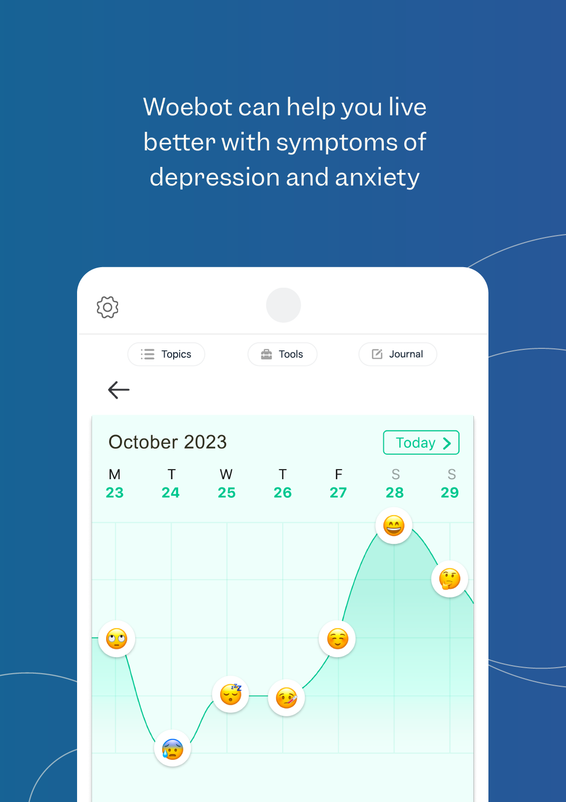
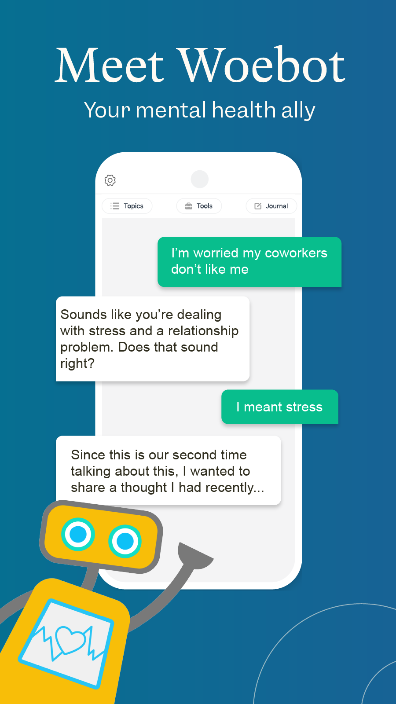

Study at a glance
Can a fully automated CBT-based chatbot reduce symptoms of depression and anxiety in young adults over a short intervention period?
Young adults aged 18–28 recruited online from a university community.
Participants in the intervention group could complete up to 20 brief chatbot sessions.
Introduction - Why is this study relevant?
Depression and anxiety symptoms are common among college students, yet many students do not access clinical services. Web-based and mobile CBT interventions can be effective, but they often suffer from low engagement and poor completion rates.
Conversational agents may address this problem by making digital support feel more interactive, immediate, and personally engaging.
This study is one of the earliest randomized controlled trials evaluating a fully automated, text-based mental health chatbot. It asks whether core elements of cognitive behavioural therapy can be delivered through a conversational interface rather than through a therapist or a traditional self-help app.
- It focuses on a relevant target group: young adults with symptoms of depression and anxiety.
- It addresses a major problem in digital mental health: poor adherence to self-help interventions.
- It provides a concrete example of low-threshold psychological support that may reduce barriers such as stigma or limited access to care.

Screenshot source: Woebot – Google Play Store
Method
| Component | Description |
|---|---|
| Design | Unblinded randomized controlled trial comparing Woebot with an information-only control condition. |
| Sample | N = 70 young adults, aged 18–28, who self-identified as experiencing symptoms of depression and anxiety. |
| Intervention | Woebot: a fully automated text-based conversational agent delivering CBT-oriented self-help content for 2 weeks, with up to 20 sessions. |
| Control group | Information-only control: participants received the National Institute of Mental Health ebook Depression in College Students. |
| Measures | PHQ-9 for depressive symptoms, GAD-7 for anxiety symptoms, and PANAS for positive and negative affect. |
| Assessment points | Baseline and follow-up after approximately 2–3 weeks. |
What Woebot delivered
- Psychoeducation based on CBT principles
- Mood tracking and reflection
- Exercises targeting cognitive distortions
- Short videos and word-game-like interactions
- Empathic responses to reported mood states
- Tailored content depending on user input
- Goal setting and follow-up
- Regular check-ins to create accountability
- Safety information and crisis support prompts
Results
Participants in the Woebot group showed a significantly stronger reduction in depressive symptoms than participants in the information-only control group.
PHQ-9: p = .017, d = 0.44
- No significant between-group effect for anxiety symptoms.
- No significant between-group effect for positive affect.
- No significant between-group effect for negative affect.
Participants used Woebot on average around 12 times over the 2-week period, suggesting relatively high engagement for a brief digital intervention. Woebot was also rated as more satisfying than the information-only ebook, and users reported greater emotional awareness after using the chatbot.
User experience
- Daily check-ins created a sense of accountability.
- Participants noticed empathic responses and personality-like features.
- The chatbot supported emotional insight and reflection.
- Some participants described Woebot in interpersonal terms.
- Some users experienced communication breakdowns.
- The chatbot sometimes failed to understand unexpected responses.
- Conversations could feel repetitive.
- Technical glitches and looping conversational segments were reported.

Screenshot source: Woebot – Google Play Store
Discussion
The study suggests that CBT-based self-help content can be delivered through a chatbot format in an engaging way. It is notable, that users did not only respond to the therapeutic content, but also to process factors such as empathy, accountability, and perceived relational qualities.
This implies that human–AI interaction may involve elements that resemble therapeutic process variables known from psychotherapy research. However, the study does not prove that these process factors caused the symptom reduction. They should be seen as plausible mechanisms that require further empirical testing.
Limitations
- Small sample size.
- Short intervention period of only 2 weeks.
- No long-term follow-up to test whether effects persisted.
- Unblinded design.
- No formal mediation analysis of engagement or therapeutic process factors.
- University-based young adult sample limits generalizability.
- Engagement in the ebook control condition could not be objectively tracked.
- No dose-response analysis was possible because usage data were deidentified.
- Conflict of interest: one author founded Woebot Labs.
Key takeaway
Woebot may reduce depressive symptoms and provide accessible low-threshold mental health support, but the evidence is preliminary.
The study supports the potential of chatbot-based CBT as a supportive tool, not as a replacement for professional mental health care.
Abbreviations
| Abbreviation | Meaning |
|---|---|
| CBT | Cognitive Behavioural Therapy. |
| RCT | Randomized Controlled Trial. |
| PHQ-9 | Patient Health Questionnaire-9; a 9-item measure of depressive symptoms. |
| GAD-7 | Generalized Anxiety Disorder-7; a 7-item measure of anxiety symptoms. |
| PANAS | Positive and Negative Affect Schedule; a measure of positive and negative affect. |
Reference
Fitzpatrick, K. K., Darcy, A., & Vierhile, M. (2017). Delivering cognitive behavior therapy to young adults with symptoms of depression and anxiety using a fully automated conversational agent (Woebot): A randomized controlled trial. JMIR Mental Health, 4(2), e19. https://doi.org/10.2196/mental.7785